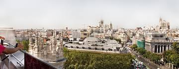

Мадрид
Серце сонячної Іспанії
Мадрид — це місто, де життя не зупиняється ні на мить. Широкі проспекти, королівський палац і живі площі створюють атмосферу свята.
Особливе місце займає площа Пуерта-дель-Соль — центр міста і символ Іспанії.
Вечорами місто наповнюється музикою, ароматами тапас і світлом ліхтарів.
Мадрид залишає відчуття тепла, енергії та свободи.